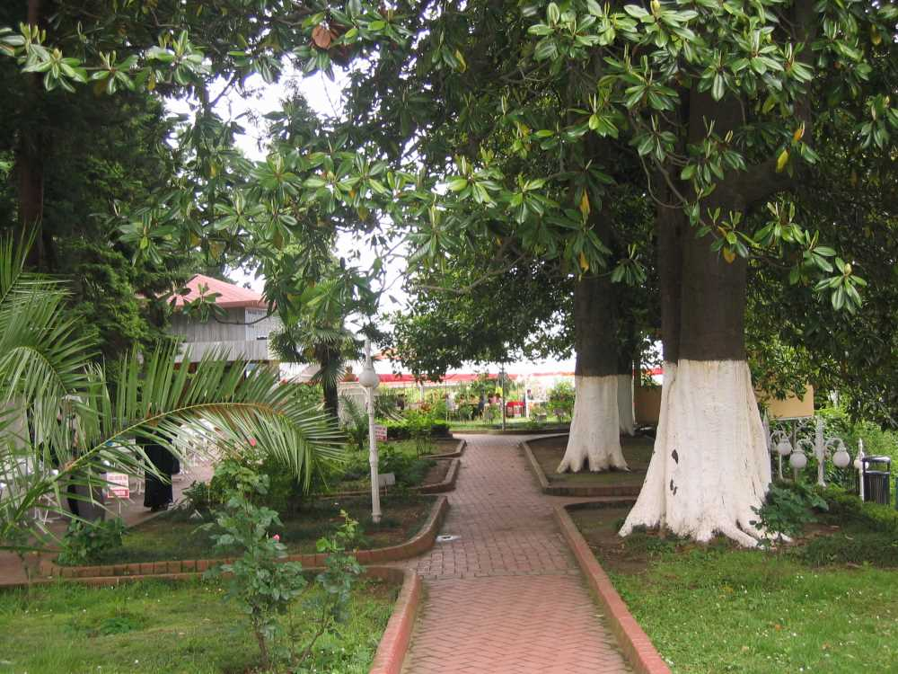
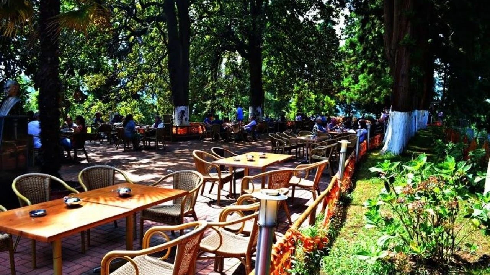

Ziraat Çay Bahçesi
Rize Ziraat Botanik Bahçesi, Rize Botanik Parkı veya Rize Ziraat Çay Bahçesi, Rize şehir merkezinin 2 kilometre güneybatısında konumlanmış bir botanik bahçesidir. Botanik bahçesinde Rize'de yetişen bitkilere ek olarak, Türkiye'nin değişik yerlerinden getirilmiş ve Rize'nin iklimine uyum sağlamış canlı türleri de yer almaktadır.

Eskiden Garal Dağı olarak bilinen araziye kurulu olan botanik bahçesi, 1924 yılında bölgede çay ve narenciye fidanlığı kurması için atanan Zihni Derin ve Zihni Derin'in Batum'dan getirttiği bahçıvan Emil Vlakov'un çalışmalarıyla 15 dekarlık bir araziye kuruldu. Botanik bahçesinde ilk olarak çay fidanları, mandalina, limon, portakal, greyfurt, ağaçkavunu ve bambu yetiştirildi. Ek olarak Zihni Derin'in Batum'dan getirttiği mimoza bitkisi gibi süs çiçekleri de botanik bahçesinde yetiştirilmeye başlandı. Çay bitkisinin burada başarıyla yetişmesiyle beraber, Rize'nin çay bitkisi yetiştirilmek için uygun olduğuna karar verildi

Tesis, 250 metrekarelik alana kurulmuş ziyaretçilerin çay oluşum süreçlerini inceleyebileceği çay fabrikası, seyir terası, çocuk parkı, nayla, Atatürk Çay ve Bahçe Kültürleri Araştırma Enstitüsü, 200 metrekarelik alana kurulmuş çay satış mağazası, Çayla adlı restoran[5] ve 500 metrekarelik araç parkından oluşmaktadır. 2022 yılında yenilenen tesise, Rize'ye özgü kara taşlardan yapılmış duvarlar, Zihni Derin büstü ve Rize'deki eski çeşmeler eklenmiştir.
.png)